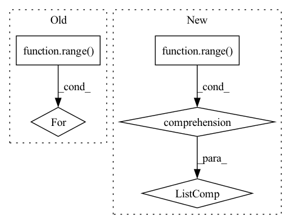

Pattern ID :439
Before Change
super().__init__()
// One GAT layer for each meta-path based adjacency matrix
self.gat_layers = nn.ModuleList()
for i in range( num_meta_paths):
self.gat_layers.append(GATConv(
in_size, out_size, layer_num_heads, dropout, dropout, activation=F.elu
))
self.semantic_attention = SemanticAttention(in_size=out_size * layer_num_heads)After Change
super().__init__()
// 顶点层次的注意力，每个GAT层对应一个元路径
self.gats = nn.ModuleList([
GATConv(in_dim, out_dim, num_heads, dropout, dropout, activation=F.elu)
for _ in range(num_metapaths)
] )
// 语义层次的注意力
self.semantic_attention = SemanticAttention(in_dim=num_heads * out_dim)
In pattern: SUPERPATTERN
Frequency: 3
Non-data size: 5
Instances Fragment ID: 1294113
Project Name: zzy979/pytorch-tutorial
Commit Name: 682a28dce444c6fd981b26ee917632039a76a610
Time: 2021-01-06
Author: 979481894@qq.com
File Name: pytorch_tutorial/gnn/han/model.py
Class Name: HANLayer
Method Name: __init__
Parent Class: nn.Module
Fragment ID: 1294112
Project Name: lucidrains/recurrent-interface-network-pytorch
Commit Name: a81dbfaf9e61843bc0da154cf547099de9ffc093
Time: 2022-12-26
Author: lucidrains@gmail.com
File Name: rin_pytorch/rin_pytorch.py
Class Name: RIN
Method Name: __init__
Parent Class: nn.Module
Fragment ID: 1294111
Project Name: hannesstark/3dinfomax
Commit Name: 7ce60298483a64e8dfea77ad61d4feec18007ac3
Time: 2021-06-24
Author: hannes.staerk@gmail.com
File Name: models/mpnn.py
Class Name: MPNNGNN
Method Name: __init__
Parent Class: nn.Module